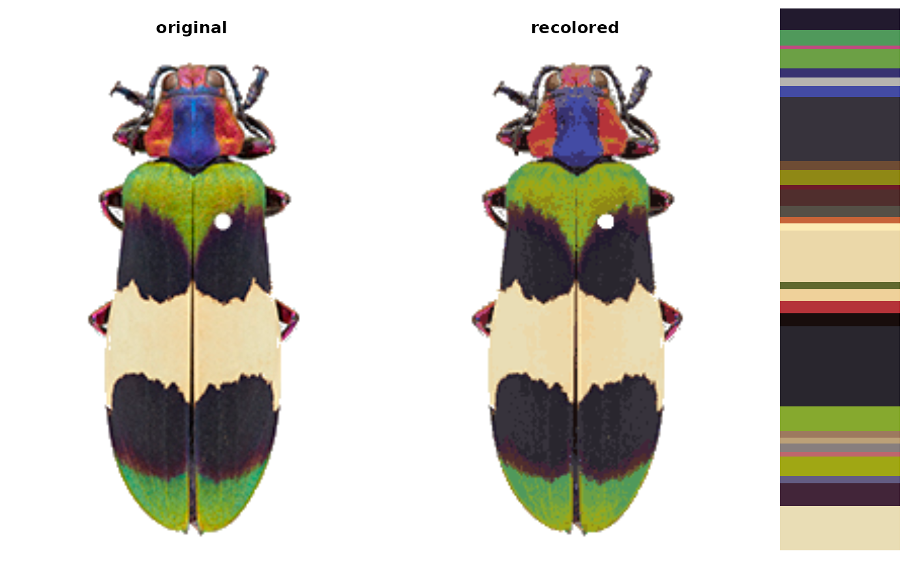

Plots color clusters in a 3D color space.
Usage
plotColorClusters(
centers,
sizes,
scaling = 10,
plus = 0,
color_space = "sRGB",
phi = 35,
theta = 60,
alpha = 0.5,
...
)Arguments
- centers
A matrix of color centers, with rows for centers and columns as channels. These are interpreted as coordinates.
- sizes
A vector of color sizes. Can be relative or absolute; it's going to be scaled for plotting.
- scaling
Factor for scaling the cluster sizes. If your clusters are way too big or small on the plot, tinker with this.
- plus
Value to add to each scaled cluster size; can be helpful for seeing small or empty bins when they are swamped by larger clusters.
- color_space
The color space of the centers. Important for setting the axis ranges and for converting the colors into hex codes for plotting. The function assumes that the
centersargument is already in this color space.- phi, theta
Viewing angles (in degrees).
- alpha
Transparency (0-1 range).
- ...
Further parameters passed to plot3D::scatter3D.
Details
This function does very little on your behalf (e.g. labeling the
axes, setting the axis ranges, trying to find nice scaling parameters,
etc). You can pass those parameters using the ... function to
plot3D::scatter3D, which is probably a good idea.
Examples
corbetti <- system.file("extdata/corbetti.png", package = "recolorize")
init_fit <- recolorize(corbetti,
color_space = "Lab",
method = "k",
n = 30)

# we still have to convert to Lab color space first, since the centers are always RGB:
centers <- grDevices::convertColor(init_fit$centers, "sRGB", "Lab")
plotColorClusters(centers, init_fit$sizes,
scaling = 25,
color_space = "Lab",
xlab = "Luminance",
ylab = "a (red-green)",
zlab = "b (blue-yellow)",
cex.lab = 0.5)